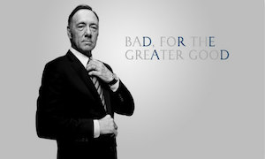
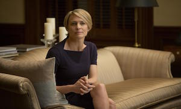
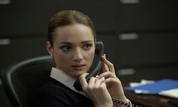

来自南卡罗来纳州第五国会选区的民主党籍国会议员，众议院多数党党鞭，在第二季中成为美国副总统，并在第二季季终时成为第46任美国总统。角色名字来源于同名小说和英国版同名剧集主角弗兰西斯·厄克特以及美国首任民主党众议院党鞭奥斯卡·安德伍德。与英国版剧集主角相似，安德伍德在剧中经常“打破第四面墙”，与观众直接对话。

法蘭西斯之妻，负责运营一家非营利组织“净水计划”（Clean Water Initiative），在第二季中辞去此工作。她时常卷入其夫的政治行动中。在第三季最後離開法蘭克·安德伍德

国会职员，与彼得·罗素有私情，后成为总统私人助理，第二季中被总统辞退。